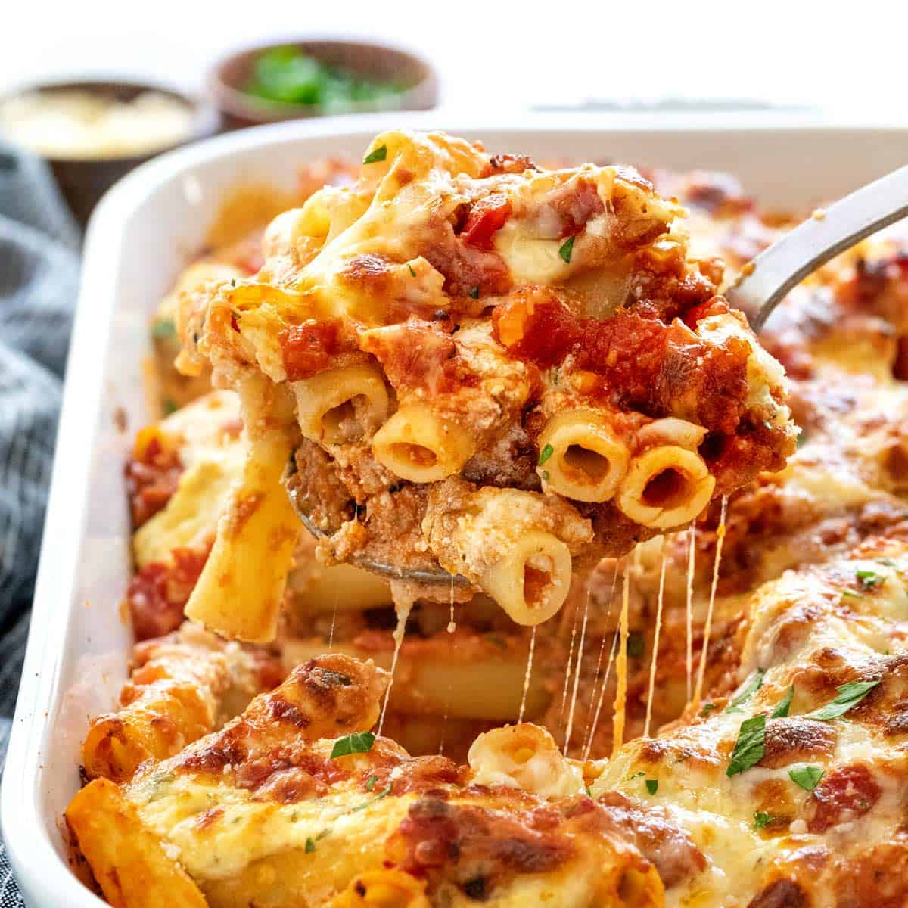

Baked Ziti

Description
Baked Ziti is a very famous and tasty italian dish
If you like pasta, you'll love baked ziti
Ingredients
- Kosher Salt
- Italian sausage
- Ground beef
- Garlic
- Italian Seasoning
- Tomato Sauce
- Cheese (Ricotta & Mozzarella
Steps
- Preheat oven at 350 F
- Cook the pasta
- Brown the meat
- Make the sauce
- Assemble the casserole
- Bake !